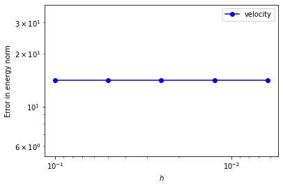
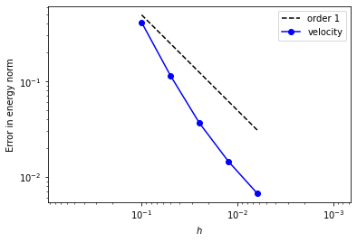
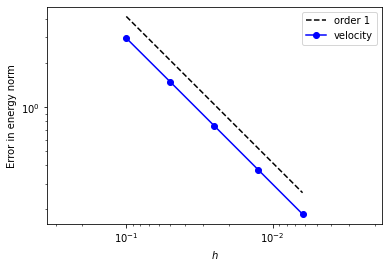
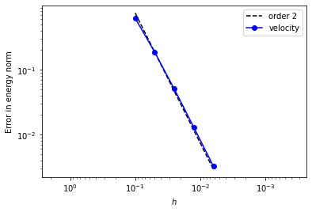
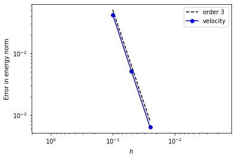
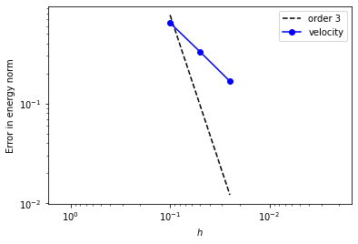

Elements for Stokes
Contents
Elements for Stokes#
Hello there!
Import some stuff
from dolfinx import fem, mesh
from dolfinx import cpp as _cpp
import ufl
import numpy as np
from petsc4py import PETSc
from mpi4py import MPI
import basix
import basix.ufl_wrapper
import matplotlib.pylab as plt
Defining a Stokes solver#
TODO: some text here, probably split this code into multiple cells.
def velocity(x, y):
a = 2*np.pi*ufl.sin(np.pi*x)*ufl.sin(np.pi*y)
b = ufl.sin(np.pi*x)*ufl.cos(np.pi*y)
c = ufl.cos(np.pi*x)*ufl.sin(np.pi*y)
return (a*b, -a*c)
def rhs(x, y):
f1 = ufl.sin(2*np.pi*y)*(ufl.cos(2*np.pi*x) - 2*np.pi**2*ufl.cos(2*np.pi*x) + np.pi**2)
f2 = ufl.sin(2*np.pi*x)*(ufl.cos(2*np.pi*y) + 2*np.pi**2*ufl.cos(2*np.pi*y) - np.pi**2)
return(2*np.pi*f1, 2*np.pi*f2)
def solve_stokes(element, domain):
V = fem.FunctionSpace(domain, element.sub_elements()[0])
Q = fem.FunctionSpace(domain, element.sub_elements()[1])
x = ufl.SpatialCoordinate(domain)
u_soln = ufl.as_vector(velocity(x[0], x[1]))
# Velocity boundary condition
g = fem.Function(V)
g.x.set(0.0)
bdry_facets = mesh.locate_entities_boundary(
domain, domain.topology.dim - 1, lambda x: np.ones(x.shape[1], dtype=np.bool8))
dofs = fem.locate_dofs_topological(V, domain.topology.dim-1, bdry_facets)
bcv = fem.dirichletbc(g, dofs)
bcs = [bcv]
# Define variational problem
u, p = ufl.TrialFunction(V), ufl.TrialFunction(Q)
v, q = ufl.TestFunction(V), ufl.TestFunction(Q)
f = fem.Function(V)
f_expr = fem.Expression(ufl.as_vector(rhs(x[0], x[1])), V.element.interpolation_points())
f.interpolate(f_expr)
a = fem.form([[ufl.inner(ufl.grad(u), ufl.grad(v)) * ufl.dx, ufl.inner(p, ufl.div(v)) * ufl.dx],
[ufl.inner(ufl.div(u), q) * ufl.dx, None]])
L = fem.form([ufl.inner(f, v) * ufl.dx, ufl.inner(fem.Constant(domain, PETSc.ScalarType(0)), q) * ufl.dx])
# We will use a block-diagonal preconditioner to solve this problem:
a_p11 = fem.form(ufl.inner(p, q) * ufl.dx)
a_p = [[a[0][0], None],
[None, a_p11]]
# Assemble LHS matrix and RHS vector
A = fem.petsc.assemble_matrix_nest(a, bcs=bcs)
A.assemble()
# We create a nested matrix `P` to use as the preconditioner. The
# top-left block of `P` is shared with the top-left block of `A`. The
# bottom-right diagonal entry is assembled from the form `a_p11`:
P11 = fem.petsc.assemble_matrix(a_p11, [])
P = PETSc.Mat().createNest([[A.getNestSubMatrix(0, 0), None], [None, P11]])
P.assemble()
b = fem.petsc.assemble_vector_nest(L)
fem.petsc.apply_lifting_nest(b, a, bcs=bcs)
# Sum contributions from ghost entries on the owner
for b_sub in b.getNestSubVecs():
b_sub.ghostUpdate(addv=PETSc.InsertMode.ADD, mode=PETSc.ScatterMode.REVERSE)
# Set Dirichlet boundary condition values in the RHS
bcs0 = fem.bcs_by_block(fem.extract_function_spaces(L), bcs)
fem.petsc.set_bc_nest(b, bcs0)
# Create nullspace vector
null_vec = fem.petsc.create_vector_nest(L)
# Set velocity part to zero and the pressure part to a non-zero constant
null_vecs = null_vec.getNestSubVecs()
null_vecs[0].set(0.0), null_vecs[1].set(1.0)
# Normalize the vector, create a nullspace object, and attach it to the
# matrix
null_vec.normalize()
nsp = PETSc.NullSpace().create(vectors=[null_vec])
assert nsp.test(A)
A.setNullSpace(nsp)
# Now we create a Krylov Subspace Solver `ksp`. We configure it to use
# the MINRES method, and a block-diagonal preconditioner using PETSc's
# additive fieldsplit type preconditioner:
# +
ksp = PETSc.KSP().create(domain.comm)
ksp.setOperators(A, P)
ksp.setType("minres")
ksp.setTolerances(rtol=1e-9)
ksp.getPC().setType("fieldsplit")
ksp.getPC().setFieldSplitType(PETSc.PC.CompositeType.ADDITIVE)
# Define the matrix blocks in the preconditioner with the velocity and
# pressure matrix index sets
nested_IS = P.getNestISs()
ksp.getPC().setFieldSplitIS(
("u", nested_IS[0][0]),
("p", nested_IS[0][1]))
# Set the preconditioners for each block
ksp_u, ksp_p = ksp.getPC().getFieldSplitSubKSP()
ksp_u.setType("preonly")
ksp_u.getPC().setType("gamg")
ksp_p.setType("preonly")
ksp_p.getPC().setType("jacobi")
# Monitor the convergence of the KSP
ksp.setFromOptions()
# Compute the solution
u = fem.Function(V)
p = fem.Function(Q)
x = PETSc.Vec().createNest([_cpp.la.petsc.create_vector_wrap(u.x), _cpp.la.petsc.create_vector_wrap(p.x)])
ksp.solve(b, x)
u.x.scatter_forward()
p.x.scatter_forward()
error = u - u_soln
velocity_error = domain.comm.allreduce(
fem.assemble.assemble_scalar(
fem.form(ufl.inner(error, error) * ufl.dx + ufl.inner(ufl.grad(error), ufl.grad(error)) * ufl.dx)) ** 0.5,
# fem.form(ufl.inner(error, error) * ufl.dx)) ** 0.5,
op=MPI.SUM)
# TODO
from random import random
pressure_error = random()
return velocity_error, pressure_error
TODO: some text here
def compute_errors(element, nmeshes=5):
N0 = 10
hs = []
velocity_errors = []
pressure_errors = []
for k in range(nmeshes):
N = N0 * 2 ** k
hs.append(1./N)
domain = mesh.create_rectangle(
MPI.COMM_WORLD, [np.array([0, 0]), np.array([1, 1])],
[N, N], mesh.CellType.triangle, mesh.GhostMode.none)
e1, e2 = solve_stokes(element, domain)
velocity_errors.append(e1)
pressure_errors.append(e2)
return hs, velocity_errors, pressure_errors
The elements#
We now use the Stokes solver we have defined to experiment with a range of element pairs that can be used. First, we define a function that takes an element as input and plots a graph showing the error as \(h\) is decreased.
%matplotlib inline
def error_plot(element, convergence=None, nmeshes=5):
hs, v_errors, p_errors = compute_errors(element, nmeshes)
legend = []
if convergence is not None:
y_value = 1.2 * v_errors[0]
plt.plot([hs[0], hs[-1]], [y_value, y_value * (hs[-1] / hs[0])**convergence], "k--")
legend.append(f"order {convergence}")
plt.plot(hs, v_errors, "bo-")
# plt.plot(hs, p_errors, "ro-")
legend += ["velocity", "pressure"]
plt.legend(legend)
plt.xscale("log")
plt.yscale("log")
plt.axis("equal")
plt.ylabel("Error in energy norm")
plt.xlabel("$h$")
plt.xlim(plt.xlim()[::-1])
Piecewise constant pressure spaces#
For our first element, we pair piecewise linear elements with piecewise constants. Using these elements, we do not converge to the solution.
element = ufl.MixedElement(
ufl.VectorElement("Lagrange", "triangle", 1),
ufl.FiniteElement("DG", "triangle", 0))
error_plot(element)
WARNING:py.warnings:/usr/local/lib/python3.10/dist-packages/ffcx/element_interface.py:81: UserWarning: Number of integration points per cell is: 112. Consider using 'quadrature_degree' to reduce number.
warnings.warn(

One way to obtain convergence with a piecewise constant pressure space is to use a piecewise quadratic space for the velocity (Fortin, 1972).
element = ufl.MixedElement(
ufl.VectorElement("Lagrange", "triangle", 2),
ufl.FiniteElement("DG", "triangle", 0))
error_plot(element, 1)

Alternatively, the same order convergence can be achieved using fewer degrees of freedom if a Crouzeix-Raviart element is used for the velocity space (Crouziex, Raviart, 1973).
element = ufl.MixedElement(
ufl.VectorElement("CR", "triangle", 1),
ufl.FiniteElement("DG", "triangle", 0))
error_plot(element, 1)

Piecewise linear pressure space#
When using a piecewise linear pressure space, we could again try using a velocity space one degree higher, but we would again observe that there is no convergence. In order to achieve convergence, we can augment the quadratic space with a cubic bubble function on the triangle (Crouziex, Falk, 1988).
element = ufl.MixedElement(
ufl.VectorElement(ufl.EnrichedElement(
ufl.FiniteElement("Lagrange", "triangle", 2),
ufl.FiniteElement("Bubble", "triangle", 3))),
ufl.FiniteElement("DG", "triangle", 1))
error_plot(element, 2)

Piecewise quadratic pressure space#
When using a piecewise quadratic space, we want to use a cubic velocity space. This cubic space must be augmented with quartic bubble functions. We have to define these bubble functions using a custom element, as the basis functions of a degree 3 Lagrange space and a degree 4 bubble space are not linearly independent: the custom element omits one of the bubbles (Crouzeix, Falk, 1988).
wcoeffs = np.zeros((9, 10))
pts, wts = basix.make_quadrature(basix.CellType.triangle, 6)
poly = basix.tabulate_polynomials(basix.PolynomialType.legendre, basix.CellType.triangle, 3, pts)
x = pts[:, 0]
y = pts[:, 1]
f = x * (1 - x) * y * (1 - y)
for j, f in enumerate([
1, x, y, x**2*y, x*y**2, (1-x-y)**2*y, (1-x-y)*y**2, x**2*(1-x-y), x*(1-x-y)**2
]):
for i in range(10):
wcoeffs[j, i] = sum(f * poly[i, :] * wts)
x = [[], [], [], []]
x[0].append(np.array([[0.0, 0.0]]))
x[0].append(np.array([[1.0, 0.0]]))
x[0].append(np.array([[0.0, 1.0]]))
x[1].append(np.array([[2 / 3, 1 / 3], [1 / 3, 2 / 3]]))
x[1].append(np.array([[0.0, 1 / 3], [0.0, 2 / 3]]))
x[1].append(np.array([[1 / 3, 0.0], [2 / 3, 0.0]]))
x[2].append(np.zeros((0, 2)))
M = [[], [], [], []]
for _ in range(3):
M[0].append(np.array([[[[1.]]]]))
for _ in range(3):
M[1].append(np.array([[[[1.], [0.]]], [[[0.], [1.]]]]))
M[2].append(np.zeros((0, 1, 0, 1)))
p3_without_bubble = basix.ufl_wrapper.BasixElement(basix.create_custom_element(
basix.CellType.triangle, [], wcoeffs, x, M, 0, basix.MapType.identity, False, 2, 3))
element = ufl.MixedElement(
ufl.VectorElement(ufl.EnrichedElement(
p3_without_bubble,
ufl.FiniteElement("Bubble", "triangle", 4))),
ufl.FiniteElement("DG", "triangle", 2))
error_plot(element, 3, 3)

This last example is converging with the wrong order… (Crouzeix, Falk, 1988)
wcoeffs = np.eye(10)
x = [[], [], [], []]
for _ in range(3):
x[0].append(np.zeros((0, 2)))
x[1].append(np.array([[1 - i, i] for i in [0.25, 0.5, 0.75]]))
x[1].append(np.array([[0.0, i] for i in [0.25, 0.5, 0.75]]))
x[1].append(np.array([[i, 0.0] for i in [0.25, 0.5, 0.75]]))
x[2].append(np.array([[1 / 3, 1 / 3]]))
M = [[], [], [], []]
for _ in range(3):
M[0].append(np.zeros((0, 1, 0, 1)))
for _ in range(3):
M[1].append(np.array([[[[1.], [0.], [0.]]], [[[0.], [1.], [0.]]], [[[0.], [0.], [1.]]]]))
M[2].append(np.array([[[[1.]]]]))
crouzeix_falk = basix.ufl_wrapper.BasixElement(basix.create_custom_element(
basix.CellType.triangle, [], wcoeffs, x, M, 0, basix.MapType.identity, False, 3, 3))
element = ufl.MixedElement(
ufl.VectorElement(crouzeix_falk),
ufl.FiniteElement("DG", "triangle", 2))
error_plot(element, 3, 3)

References#
Crouzeix, Michel and Falk, Richard S. Nonconforming finite elements for the Stokes problem, Mathematics of Computation 52, 437–456, 1989. [DOI: 10.2307/2008475]
Crouzeix, Michel and Raviart, Pierre-Arnaud. Conforming and nonconforming finite element methods for solving the stationary Stokes equations, Revue Française d’Automatique, Informatique et Recherche Opérationnelle 3, 33–75, 1973. [DOI: 10.1051/m2an/197307R300331]
Fortin, Michel. Calcul numérique des écoulements des fluides de Bingham et des fluides newtoniens incompressibles par la méthode des éléments finis (PhD thesis), Univ. Paris, 1972.